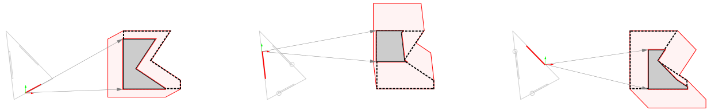

Due to high demand about this project (!), this website is the most informing source you may ever find . . . apart from the upcoming paper!
After autonomously scanning the scrap-pieces as described in the previous step ([RAS] Robotic Autonomous Scanning), the next task would be to rationalize and optimize the designed shape for fabrication. This includes tesselating the shape into descrete panels in a way that the resulted panels can be nested into and fabricated using the scanned pieces. This process is divided into three steps:
In order to be able to optimize the panelized shape using the genetic algorithms, a parametric tesselation is required. In this project, "Tangent-Plane Intersection" (TPI) is used as the tesselation algorithm and the coordinates of the planes on the surface are the parameters to be optimized using the Genetic Algorithms.
Tangent-Plane Intersection method will be explained here.
In order to fit a given panel inside one of the scrap pieces, a custom algorithm has been designed and implemented. First, the critical parts of the panel are defined. This includes parts such as edges that are connecting the panels to their adjacent ones, screw-holes or joint places, edges which are critical to orient the piece in place, etc. which cannot be cutted out of the piece. This algorithm finds the best possible position of the panel inside a piece such that all the critical parts of the panel fall inside the scrap piece with maximum possible clearance from the edges and the panel stays in one piece after it has been cut.
Considering a critical point in the panel, the 2D polygon of “target" shape represents the sub-vector-space, in a coordinate system origined at that critical point (CP), that will translate that point into the polygon.
Considering the start of the line (or any open curve) or the center of the area as the pivot, just the same as with the points, the 2D polygon of “target” shape represents the sub-vector-space, in a coordinate system origined at that pivot point (PV), that will translate the pivot point into the polygon. However, this does not guarantee that the whole length of the line or the whole critical area falls inside the target shape since critical lines and areas are 1-D and 2-D elements. Therefore, an extra step needs to be carried out to subtract the invalid sub-vectors-space. By subtracting this invalid space from the target shape, we can replace the 1-D or 2-D element with its equivalent 0-D element (located at its pivot point) and its corresponding sub-vector-space that fulfills the required conditions. The Minkowski-Substraction algorithm between the critical line or area and the boundary of the target shape is used to find out this invalid sub-space and it is then subtracted from the target polygon. These steps needs to be applied to each critical line (curve) or area.
c <\p>
In order to find the best orientation, the previous step should be tested in different angles of rotation. To find the best angle, a few evenly distributed angles (5 in this case) over an span of 120 degrees (as the tool is symmetric) are tested first, the best angle is found and the test will be repeated over a smaller span around that angle. This step is repeated for 7 times to find the proper orientation.
In order to be able to optimize the panelized shape using the genetic algorithms, a parametric tesselation is required. In this project, "Tangent-Plane Intersection" (TPI) is used as the tesselation algorithm and the coordinates of the planes on the surface are the parameters to be optimized using the Genetic Algorithms. The process of optimizing the panelization by the means of maximizing the up-cycling efficiency of the process is considered as an iterative process in this project.
For this reason, a numerical representation of the efficiency is considered as the criteria. The fact that not every arbitrary panelization of the surface is producable using the scrap woods are considered as a filter which if not passed, the criteria is not considered valid and the panelization will be removed from the process.
Considering a critical point in the panel, the 2D polygon of “target" shape represents the sub-vector-space, in a coordinate system origined at that critical point (CP), that will translate that point into the polygon.